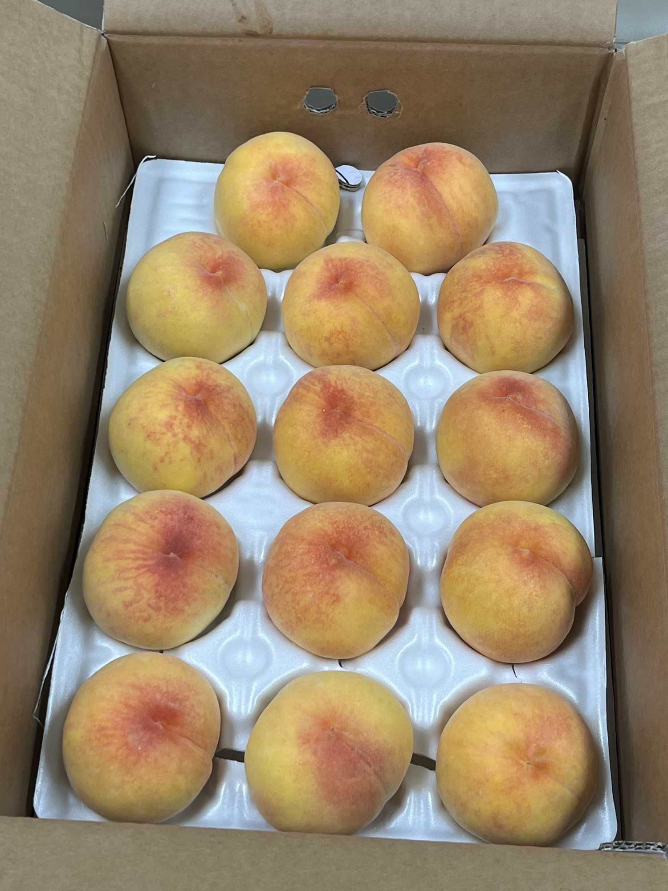
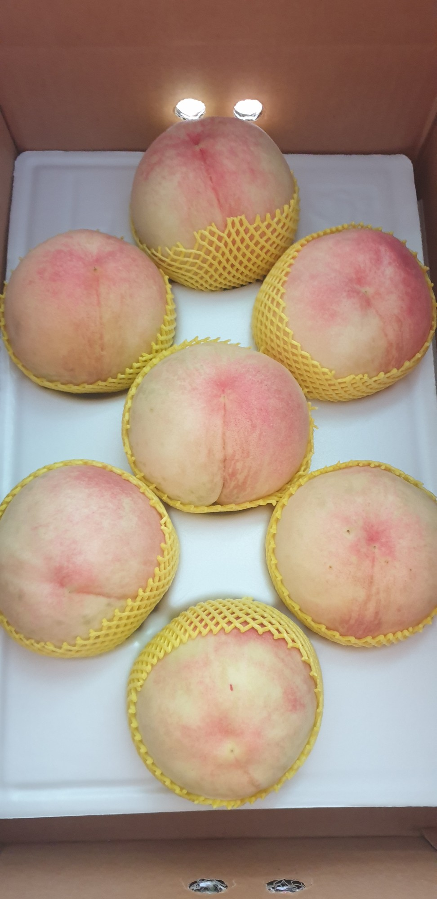
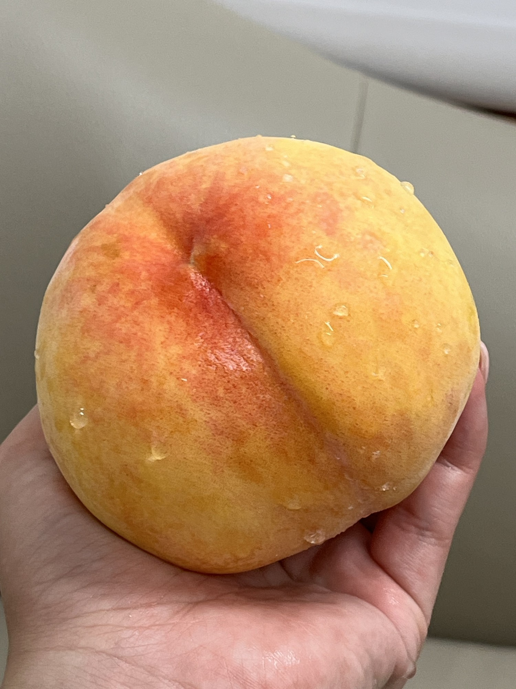
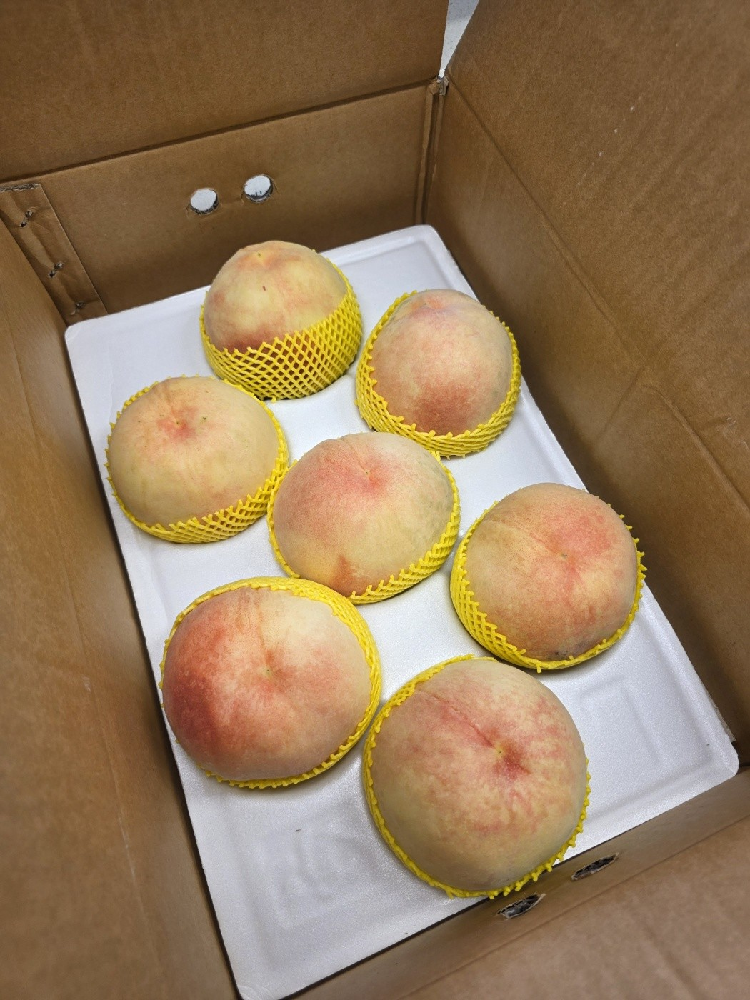
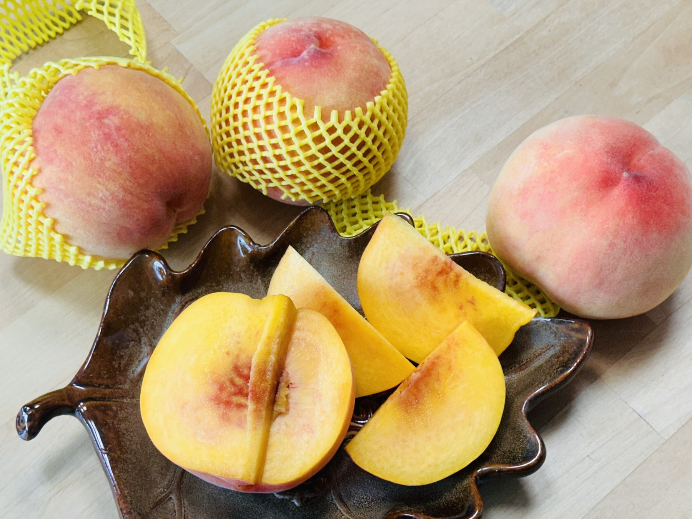
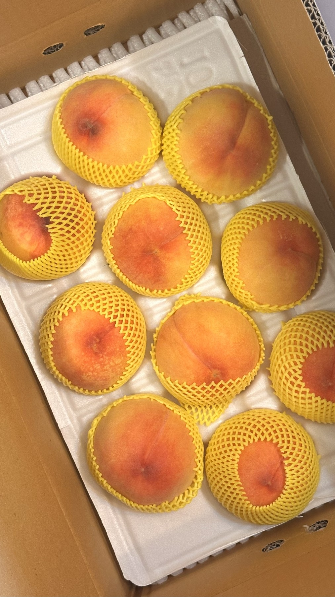
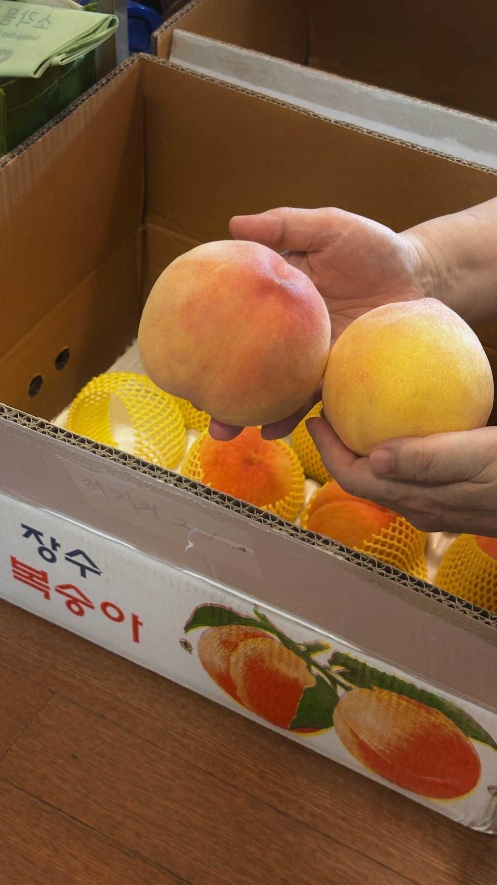

부드럽고 촉촉한 단맛
백도는 부드러운 과육과 풍부한 과즙, 은은한 단맛이 매력적인 복숭아입니다.
전북 고랭지 장수에서 자라 당도가 좋은 복숭아를 농부가 직접 선별해 산지에서 발송합니다.
모든 상품은 배송비 포함 4kg 한 상자입니다.
대윤농장 복숭아는 8월 초부터 9월 중순까지 품종별로 순차 수확됩니다. 마도카 황도, 경봉, 스위트문을 시작으로 천중도 엑셀라, 서왕모, 스위트퀸, 대향금, 부흥까지 시기별로 가장 맛이 오른 복숭아를 선별해 보내드립니다.
백도와 황도를 모두 취급하며, 전북 장수 고랭지에서 자라 당도가 좋은 복숭아를 산지에서 바로 발송합니다.
백도는 부드러운 과육과 풍부한 과즙, 은은한 단맛이 매력적인 복숭아입니다.
황도는 진한 향과 새콤달콤한 맛, 비교적 탄탄한 식감이 특징입니다.
단단하고 아삭한 식감을 좋아하신다면 택배를 받은 뒤 바로 드셔도 좋습니다.
부드럽고 과즙이 풍부한 복숭아를 좋아하신다면 서늘한 상온에서 후숙한 뒤 드세요.
복숭아 향이 진해지고 손으로 살짝 눌렀을 때 부드러운 느낌이 들면 먹기 좋은 상태입니다.







아래 주문서를 작성하면 응답이 구글 스프레드시트에 자동으로 저장됩니다.
배송 중 눌림을 줄이기 위해 향이 오르기 시작한 단단한 복숭아를 선별합니다.
직사광선을 피해 서늘한 실온에 1~2일 두고 달콤한 향이 날 때 드세요.
먹기 좋은 상태가 되면 한 알씩 종이로 감싸 냉장 보관하세요.